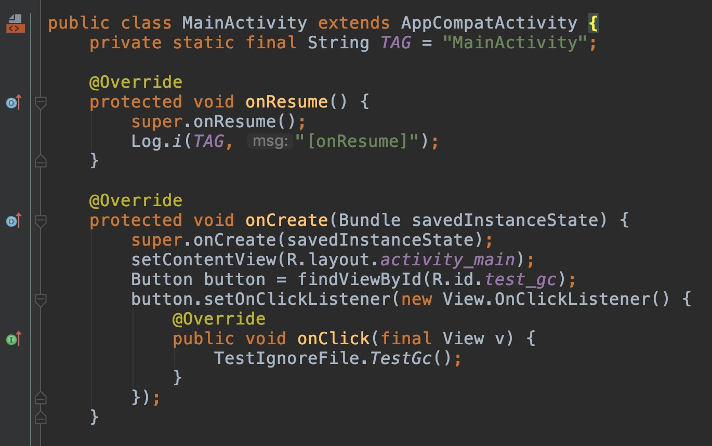
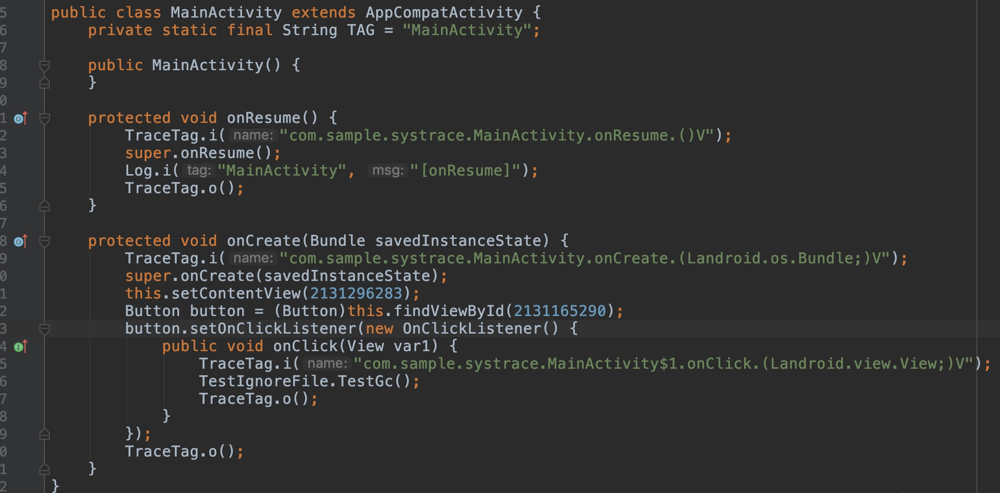
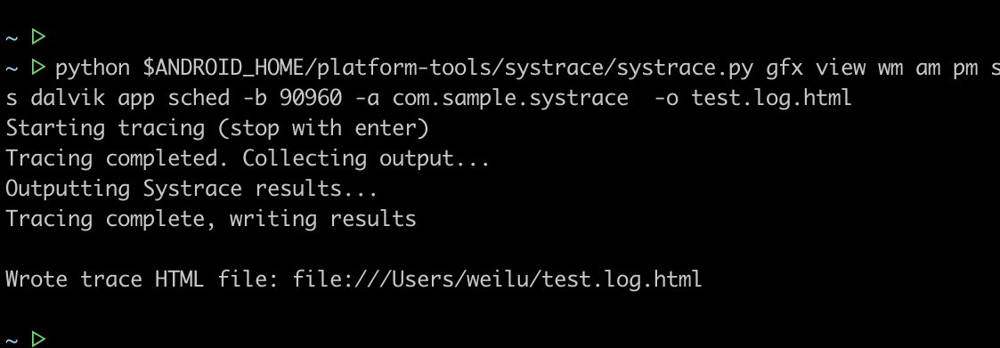
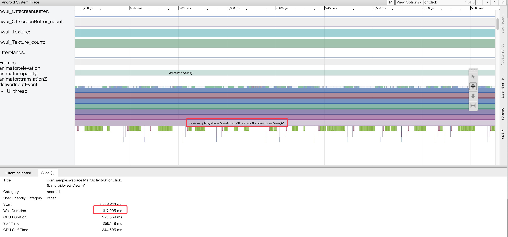
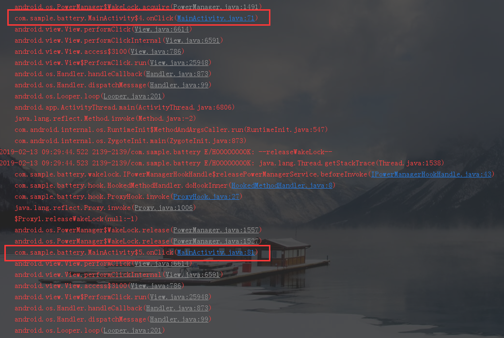
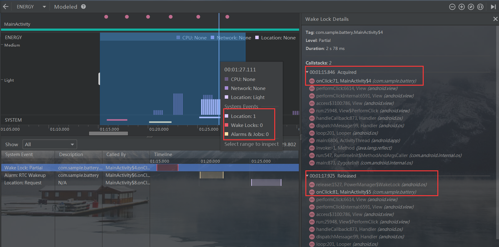

你好，我是唯鹿。
接着上篇练习手记，今天练习 6～8、12、17、19 这六期内容（主要针对有课后 Sample 练习的），相比 1～5 期轻松了很多。
该项目展示了使用 PLT Hook 技术来获取 Atrace 的日志，可以学习到 systrace 的一些底层机制。
没有什么问题，项目直接可以运行起来。运行项目后点击开启 Atrace 日志，然后就可以在 Logcat 日志中查看到捕获的日志，如下：
11:40:07.031 8537-8552/com.dodola.atrace I/HOOOOOOOOK: ========= install systrace hoook =========11:40:07.034 8537-8537/com.dodola.atrace I/HOOOOOOOOK: ========= B|8537|Record View#draw()11:40:07.034 8537-8552/com.dodola.atrace I/HOOOOOOOOK: ========= B|8537|DrawFrame11:40:07.035 8537-8552/com.dodola.atrace I/HOOOOOOOOK: ========= B|8537|syncFrameState ========= B|8537|prepareTree ========= E ========= E ========= B|8537|eglBeginFrame ========= E ========= B|8537|computeOrdering ========= E ========= B|8537|flush drawing commands ========= E11:40:07.036 8537-8552/com.dodola.atrace I/HOOOOOOOOK: ========= B|8537|eglSwapBuffersWithDamageKHR ========= B|8537|setSurfaceDamage ========= E11:40:07.042 8537-8552/com.dodola.atrace I/HOOOOOOOOK: ========= B|8537|queueBuffer ========= E11:40:07.043 8537-8552/com.dodola.atrace I/HOOOOOOOOK: ========= B|8537|dequeueBuffer ========= E ========= E ========= E通过 B|事件和 E|事件是成对出现的，这样就可以计算出应用执行每个事件使用的时间。那么上面的 Log 中 View 的 draw() 方法显示使用了 9ms。
这里实现方法是使用了Profilo的 PLT Hook 来 hook libc.so 的write与__write_chk方法。libc 是 C 的基础库函数，为什么要 hook 这些方法，需要我们补充 C、Linux 相关知识。
同理Chapter06-plus展示了如何使用 PLT Hook 技术来获取线程创建的堆栈，README 有详细的实现步骤介绍，我就不赘述了。
这个 Sample 是学习如何给代码加入 Trace Tag，大家可以将这个代码运用到自己的项目中，然后利用 systrace 查看结果。这就是所谓的 systrace + 函数插桩。
操作步骤：
-
使用 Android Studio 打开工程 Chapter07。
-
运行 Gradle Task
:systrace-gradle-plugin:buildAndPublishToLocalMaven编译 plugin 插件。 -
使用 Android Studio 单独打开工程 systrace-sample-android。
-
编译运行 App（插桩后的 class 文件在目录
Chapter07/systrace-sample-android/app/build/systrace_output/classes中查看）。
对比一下插桩效果，插桩前：

插桩后:

可以看到在方法执行前后插入了 TraceTag，这样的话beginSection方法和endSection方法之间的代码就会被追踪。
public class TraceTag { @TargetApi(Build.VERSION_CODES.JELLY_BEAN_MR2) public static void i(String name) { Trace.beginSection(name); } @TargetApi(Build.VERSION_CODES.JELLY_BEAN_MR2) public static void o() { Trace.endSection(); }其实 Support-Compat 库中也有类似的一个TraceCompat，项目中可以直接使用。
然后运行项目，打开 systrace：
python $ANDROID_HOME/platform-tools/systrace/systrace.py gfx view wm am pm ss dalvik app sched -b 90960 -a com.sample.systrace -o test.log.html
最后打开生成的 test.log.html 文件就可以查看 systrace 记录：

当然，这一步我们也可以使用 SDK 中的 Monitor，效果是一样的。
使用 systrace + 函数插桩的方式，我们就可以很方便地观察每个方法的耗时，从而针对耗时的方法进行优化，尤其是 Application 的启动优化。
该项目展示了关闭掉虚拟机的 class verify 后对性能的影响。
在加载类的过程有一个 verify class 的步骤，它需要校验方法的每一个指令，是一个比较耗时的操作。这个例子就是通过 Hook 去掉 verify 这个步骤。该例子尽量在 Dalvik 下执行，在 ART 下的效果并不明显。
去除校验代码（可以参看阿里的Atlas）：
AndroidRuntime runtime = AndroidRuntime.getInstance(); runtime.init(this.getApplicationContext(), true); runtime.setVerificationEnabled(false);具体运行效果这里我就不展示了，直接运行体验就可以了。
通过复写 Application 的
getSharedPreferences替换系统SharedPreferences的实现，核心的优化在于修改了 Apply 的实现，将多个 Apply 方法在内存中合并，而不是多次提交。
修改SharedPreferencesImpl的 Apply 部分如下：
public void apply() { // 先调用 commitToMemory() final MemoryCommitResult mcr = commitToMemory(); boolean hasDiskWritesInFlight = false; synchronized (SharedPreferencesImpl.this) { // mDiskWritesInFlight 大于 0 说明之前已经有调用过 commitToMemory() 了 hasDiskWritesInFlight = mDiskWritesInFlight > 0; } // 源码没有这层判断，直接提交。 if (!hasDiskWritesInFlight) { final Runnable awaitCommit = new Runnable() { public void run() { try { mcr.writtenToDiskLatch.await(); } catch (InterruptedException ignored) { } } }; QueuedWork.add(awaitCommit); Runnable postWriteRunnable = new Runnable() { public void run() { awaitCommit.run(); QueuedWork.remove(awaitCommit); } }; SharedPreferencesImpl.this.enqueueDiskWrite(mcr, postWriteRunnable); } // Okay to notify the listeners before it's hit disk // because the listeners should always get the same // SharedPreferences instance back, which has the // changes reflected in memory. notifyListeners(mcr);这个是全面解析 SQLite 的资料，有兴趣的可以下载看看。
该项目展示了如何使用 PLT Hook 技术来获取网络请求相关信息。
通过 PLT Hook，代理 Socket 相关的几个重要函数：
/*** 直接 hook 内存中的所有 so，但是需要排除掉 socket 相关方法本身定义的 libc(不然会出现循坏)* plt hook*/void hookLoadedLibs() { ALOG("hook_plt_method"); hook_plt_method_all_lib("libc.so", "send", (hook_func) &socket_send_hook); hook_plt_method_all_lib("libc.so", "recv", (hook_func) &socket_recv_hook); hook_plt_method_all_lib("libc.so", "sendto", (hook_func) &socket_sendto_hook); hook_plt_method_all_lib("libc.so", "recvfrom", (hook_func) &socket_recvfrom_hook); hook_plt_method_all_lib("libc.so", "connect", (hook_func) &socket_connect_hook);}int hook_plt_method_all_lib(const char* exclueLibname, const char* name, hook_func hook) { if (refresh_shared_libs()) { // Could not properly refresh the cache of shared library data return -1; } int failures = 0; for (auto const& lib : allSharedLibs()) { if (strcmp(lib.first.c_str(), exclueLibname) != 0) { failures += hook_plt_method(lib.first.c_str(), name, hook); } } return failures;}运行项目，访问百度的域名https://www.baidu.com，输出如下：
17:08:28.347 12145-12163/com.dodola.socket E/HOOOOOOOOK: socket_connect_hook sa_family: 1017:08:28.349 12145-12163/com.dodola.socket E/HOOOOOOOOK: stack:com.dodola.socket.SocketHook.getStack(SocketHook.java:13) java.net.PlainSocketImpl.socketConnect(Native Method) java.net.AbstractPlainSocketImpl.doConnect(AbstractPlainSocketImpl.java:334) java.net.AbstractPlainSocketImpl.connectToAddress(AbstractPlainSocketImpl.java:196) java.net.AbstractPlainSocketImpl.connect(AbstractPlainSocketImpl.java:178) java.net.SocksSocketImpl.connect(SocksSocketImpl.java:356) java.net.Socket.connect(Socket.java:586) com.android.okhttp.internal.Platform.connectSocket(Platform.java:113) com.android.okhttp.Connection.connectSocket(Connection.java:196) com.android.okhttp.Connection.connect(Connection.java:172) com.android.okhttp.Connection.connectAndSetOwner(Connection.java:367) com.android.okhttp.OkHttpClient$1.connectAndSetOwner(OkHttpClient.java:130) com.android.okhttp.internal.http.HttpEngine.connect(HttpEngine.java:329) com.android.okhttp.internal.http.HttpEngine.sendRequest(HttpEngine.java:246) com.android.okhttp.internal.huc.HttpURLConnectionImpl.execute(HttpURLConnection AF_INET6 ipv6 IP===>183.232.231.173:443 socket_connect_hook sa_family: 1 Ignore local socket connect02-07 17:08:28.637 12145-12163/com.dodola.socket E/HOOOOOOOOK: respond: <!DOCTYPE html> <html><!--STATUS OK--><head><meta charset="utf-8"><title> 百度一下, 你就知道 </title>可以看到我们获取到了网络请求的相关信息。
最后，我们可以通过 Connect 函数的 hook，实现很多需求，例如：
- 禁用应用网络访问
- 过滤广告 IP
- 禁用定位功能
使用 Java Hook 实现 Alarm、WakeLock 与 GPS 的耗电监控。
实现原理
根据老师提供的提示信息，动态代理对应的PowerManager、AlarmManager、LocationManager的mService实现，要拦截的方法在PowerManagerService、AlarmManagerService、LocationManagerService中。
实现核心代码：
Object oldObj = mHostContext.getSystemService(Context.XXX_SERVICE); Class<?> clazz = oldObj.getClass(); Field field = clazz.getDeclaredField("mService"); field.setAccessible(true); final Object mService = field.get(oldObj); setProxyObj(mService); Object newObj = Proxy.newProxyInstance(this.getClass().getClassLoader(), mService.getClass().getInterfaces(), this); field.set(oldObj, newObj)写了几个调用方法去触发，通过判断对应的方法名来做堆栈信息的输出。
输出的堆栈信息如下：

当然，强大的 Studio 在 3.2 后也有了强大的耗电量分析器，同样可以监测到这些信息，如下图所示（我使用的 Studio 版本为 3.3）。

实现不足之处：
- 可能兼容性上不是特别完善（期待老师的标准答案）。
- 没有按照耗电监控的规则去做一些业务处理。
心得体会：
- 本身并不复杂，只是为了找到 Hook 点，看了对应的 Service 源码耗费了一些时间，对于它们的工作流程有了更深的认识。
- 平时也很少使用动态代理，这回查漏补缺，一次用了个爽。
这个作业前前后后用了一天时间，之前作业还有一些同学提供 PR，所以相对轻松些，但这次没有参考，走了点弯路，不过收获也是巨大的。我就不细说了，感兴趣的话可以参考我的实现。完整代码参见GitHub，仅供参考。
参考
COMMUNITY NOTES
读者评论
这篇文章暂时没有读者留言。